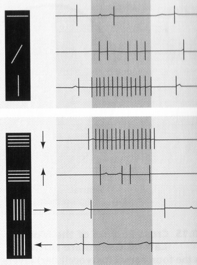

Hubel(좌)·Wiesel(우) · Harvard Medical School
실험 대상 · 고양이의 시각 피질
1959년, 하버드의 허벨과 위젤은 고양이의 시각 피질에 전극을 꽂고 무엇을 보여줄 때 뉴런이 반응하는지를 쟀습니다. 결과는 뜻밖이었습니다 — 각 뉴런은 특정 각도의 선 한 줄에만 반응했습니다. 수직선만 좋아하는 뉴런, 45° 대각선만 좋아하는 뉴런 — 각자 자기 담당이 있었습니다.
이 뉴런들이 층층이 모여 — 선은 곡선이 되고, 곡선은 모양이 되고, 모양은 "고양이" "엄마" "집"이 됩니다. 뇌는 "픽셀"이 아니라 "엣지"에서 시작합니다. 이 발견이 — AI의 이미지 처리 방식을 결정하게 됩니다.